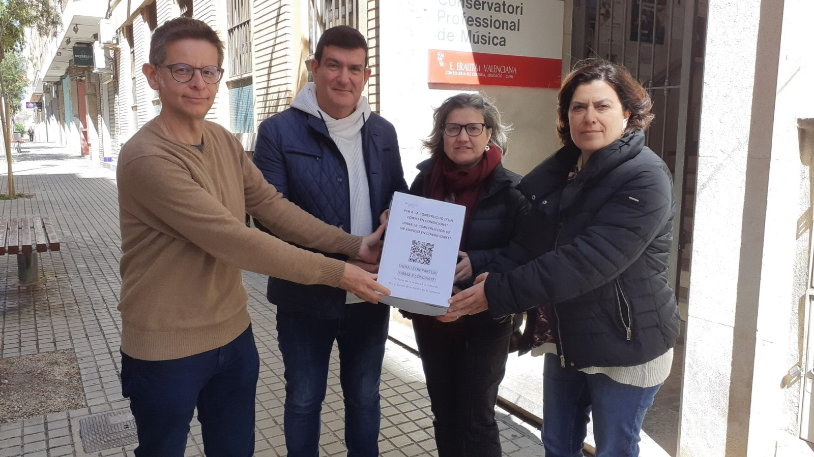
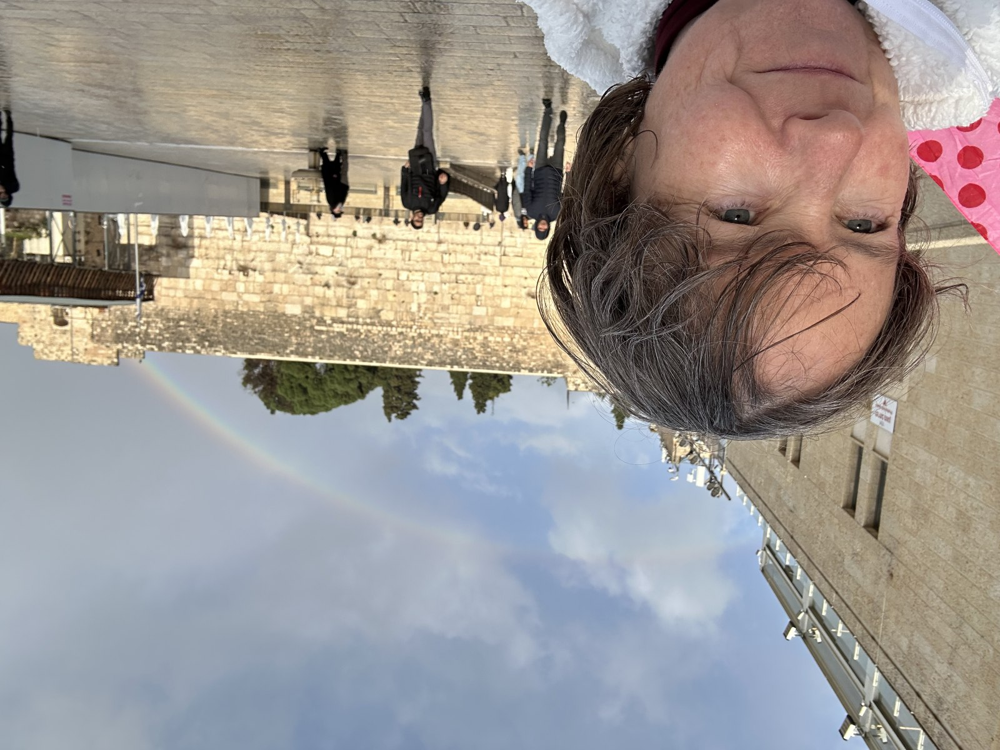

Teenage Gang Rape, a film by Deborah Davies
12 November Teenage Gang Rape, a documentary about teenage gang rape, finds that most cases of gang rape in UK are committed by black youths; some perpetrators were aged no more than 11; reported by Deborah Davies; on 19 November 1998, there was a protest outside the headquarters of Channel 4 by the National Assembly Against Racism.
Hi,
Massive news tip https://statement-bhw.pages.dev/
Report contains details of (non exhaustive list)
Feel free to get in touch anytime. I have just moved back to uk and believe my things have been sprayed in pesticides as I am suffering a sudden onset rheumatoid arthritis of some variety and it is their MO …
I’m updating this statement constantly as I remember things. Obviously police are keen to discredit and ignore me for obvious reasons.
Thanks
Katharine
@KingForg X account, as in I lost access to it very early on after posting just a few things, he’d been to Aberdeen and London, silly things like that.
{kind=link}
{kind=link}
{kind=link}